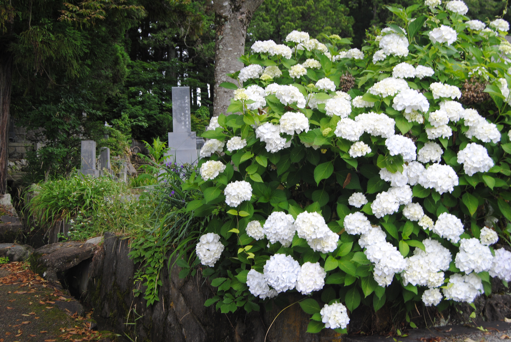
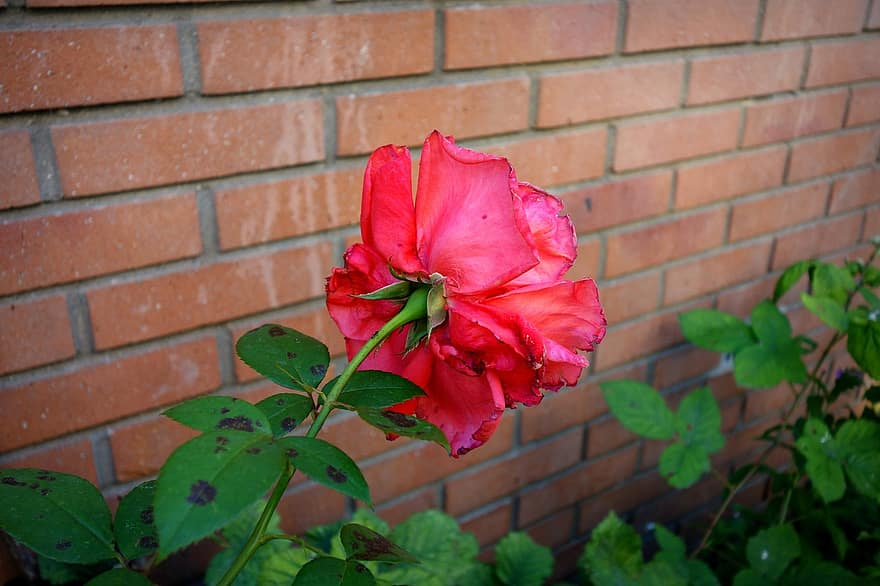
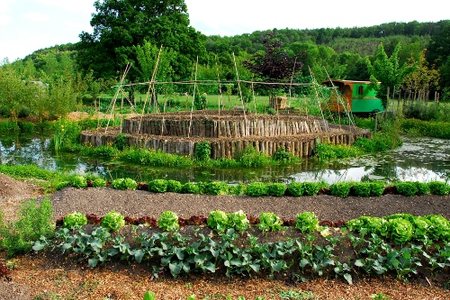

jardin botanique Amsterdam
jardin botanique Amsterdam jardin particulier Amsterdam
jardin particulier Amsterdam plante grimpante
plante grimpante Potager sur un toit
Potager sur un toit- hydrangea kyoto
- rose urbaine
- fleur dans l'urbanisme
- jardin en permaculture
La botanique urbaine est essentiel dans la protection de la biodiversité.
Cela permet de constituer l’architecture des corridors biologiques,
de favoriser la présence de très nombreuses espèces végétales et animales,
la production de sols, la production d’oxygène,
Services culturels et sociaux.
La botanique urbaine apporte un caractère qualitatif au paysage urbain, un support d’éducation à l’environnement,
à la biodiversité, d’activités artistiques et sportives,
C’est aussi des contraintes ou des impacts négatifs tel que la sécurité des personnes, la production d’allergènes,
… mais ces effets sont surmontables si l’on plante le bon arbre au bon endroit.